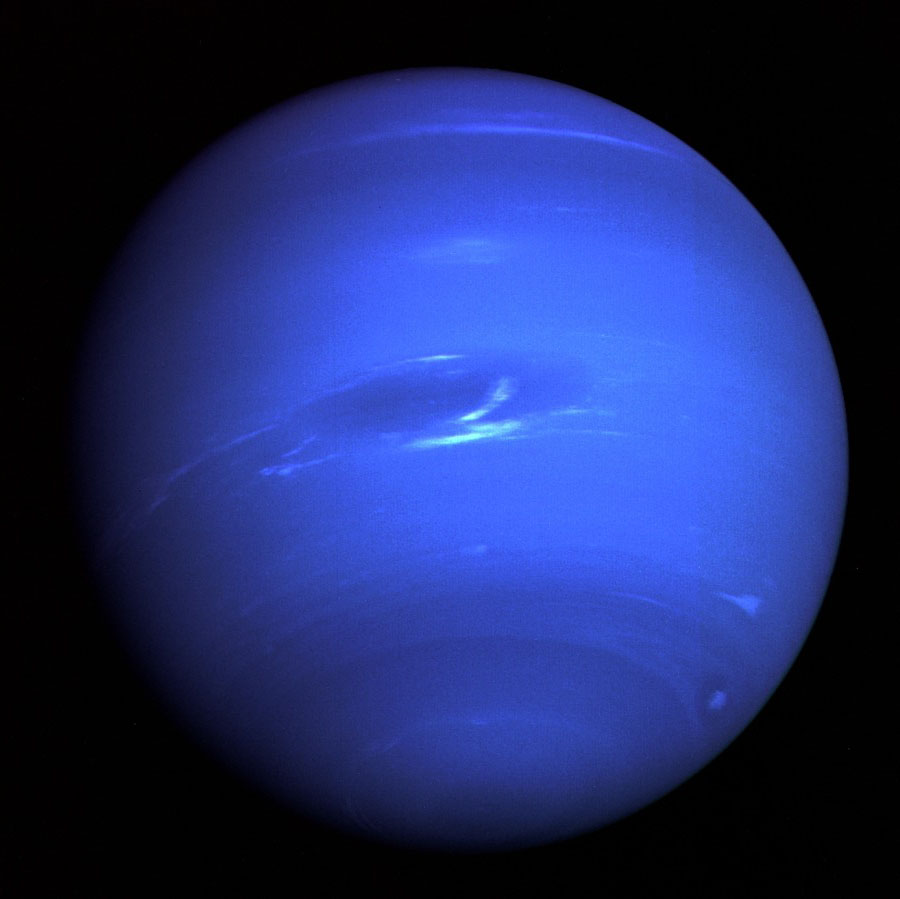

| |
Сонце — типова зоря головної послідовності спектрального класу G2. Воно майже ідеально сферичне і являє собою гарячу плазму, сплетену магнітними полями. За діаметру приблизно 1.3 млн км, що в 109 разів більше, ніж земний, має масу близько 2 × 1030 кг, що більше земної приблизно в 330 000 разів. Джерелом енергії Сонця є термоядерні реакції в його ядрі. Земля та сім інших планет обертаються навколо Сонця. Крім них, навколо Сонця обертаються комети, астероїди, метеороіди, космічний пил та інші дрібні об'єкти. Маса Сонця становить 99,866 % від загальної маси всієї Сонячної системи. Сонячне випромінювання підтримує життя на Землі (фотони необхідні для початкових стадій процесу фотосинтезу) та визначає клімат нашої планети. Сонце складається з водню (~73 % від маси і ~92 % від об'єму), гелію (~ 25 % від маси і ~ 7 % від об'єму) та інших елементів з меншою концентрацією (менше 2 % від маси) — заліза, нікелю, кисню, азоту, кремнію, сірки, магнію, вуглецю, неону, кальцію та хрому. Середня густина Сонця становить 1400 кг/м³. Температура поверхні Сонця становить близько 6000 К. Сонце світить майже білим світлом, але через сильніше розсіювання і поглинання короткохвильової частини спектра атмосферою Землі пряме світло Сонця біля поверхні нашої планети набуває певного жовтого відтінку. Якщо небо ясне, то блакитний відтінок розсіяного світла складається з жовтуватим прямим сонячним світлом і загальне освітлення об'єктів на Землі стає білим.
Сонячний спектр містить лінії іонізованих та нейтральних металів, а також іонізованого водню. У нашій Галактиці налічується понад 100 млрд зірок. При цьому 85 % зірок нашої галактики — це зірки, менші за Сонце (здебільшого — червоні карлики). Як і всі зорі головної послідовності, Сонце виробляє енергію шляхом термоядерного синтезу. У Сонця переважна частина енергії виробляється при синтезі гелію з водню.
Відстань Сонця від Землі — близько 149,6 млн км, приблизно дорівнює астрономічній одиниці, а видимий кутовий діаметр, як і в Місяця — трохи більше пів градуса (31-32 мінути). Сонце перебуває на відстані близько 26 000 світлових років від центру «Чумацького Шляху» й обертається навколо нього з періодом близько 220 млн ро
|
| Сонце |
 |
Меркурій — найближча до Сонця планета Сонячної системи. Обертається навколо Сонця за 87,969 земних діб. Меркурій належить до внутрішніх планет, оскільки його орбіта лежить ближче до Сонця, ніж пояс астероїдів. Після позбавлення Плутона статусу планети Меркурій є найменшою планетою Сонячної системи. Орбіта Меркурія значно витягнута (ексцентриситет 0,2056) і нахилена до площини екліптики (7,00°). Середня швидкість його руху орбітою — 47,36 км/с. За всіма цими показниками він тримає рекорд серед великих планет Сонячної системи. Відстань від Меркурія до Сонця змінюється від 46,00 до 69,82 млн км. Період обертання навколо Сонця (меркуріанський рік) становить 87,97 земної доби, а середній інтервал між однаковими фазами (синодичний період) — 115,9 земної доби. Відстань до Меркурія від Землі змінюється від 77,3 до 221,9 млн км, а кутовий розмір для земного спостерігача — від 13" до 4,5". Період обертання Меркурія навколо своєї осі — 58,646 діб, що становить 2/3 періоду обертання навколо Сонця. Таким чином, за один оберт навколо Сонця планета робить 1,5 оберти навколо своєї осі, і під час проходження перигелію повертається до Сонця почергово то нульовим, то 180-м меридіаном. Тривалість сонячної доби на планеті дорівнює 3 зоряним меркуріанським добам або 2 меркуріанським рокам, що становить близько 175,92 земної доби. Узгодженість обертання планети навколо власної осі з обертанням навколо Сонця — результат дії припливного тертя і крутного моменту гравітаційних сил з боку Сонця, зумовленого відхиленням розподілу мас на Меркурії від концентричного (центр мас зсунуто щодо геометричного центру планети). Через близькість Сонця вплив припливних сил на Меркурій значно більший, ніж на інші планети. |
| Меркурій |
| |
Венера — друга від Сонця та шоста за розміром планета Сонячної системи.
Період обертання навколо Сонця — 224,7 земних діб. Названа на честь Венери, богині кохання з римського пантеону. Це єдина з восьми планет Сонячної системи, яка отримала назву на честь жіночого божества. За розміром майже така ж, як і Земля. Венера — внутрішня планета, і на земному небосхилі не віддаляється від Сонця далі 48°. Венера — третій за яскравістю об'єкт на небі; її блиск поступається лише блиску Сонця та Місяця. Належить до планет, відомих людству з найдавніших часів. Орбіта Венери ближча до кола, ніж орбіта будь-якої іншої планети Сонячної системи. Її ексцентриситет становить лише 0,0068. Період обертання навколо Сонця (венеріанський рік) становить 224,7 земної доби. Іноді Венера підходить до Землі на відстань, меншу 40 млн км.
Венера обертається навколо своєї осі в зворотному напрямку до обертання навколо Сонця, на відміну від Землі та інших планет. Сидеричний період обертання Венери навколо своєї осі (зоряна доба) становить 243,018 земної доби. Тривалість сонячної доби на планеті становить близько 116,75 земних діб.
Як і координати її Північного полюса (пряме піднесення = 272,57°, схилення = +67,14°), його отримано в результаті спільної обробки результатів бортових радіолокаційних і доплерівских вимірювань «Магеллана» і «Венери-15, −16» для 20 опорних точок на поверхні Венери].
Хоча у Венери й Землі близькі розміри, середня густина й навіть внутрішня будова, проте Земля має досить потужне магнітне поле, а Венера його не має.
За однією з сучасних теорій[джерело?] напруженість дипольного магнітного поля залежить від прецесії полярної осі і вектора кутової швидкості. Саме цей параметр на Венері мізерно малий, але вимірювання свідчать про нижчу напруженість ніж та, яку передбачає теорія.
Хоча загального дипольного поля у Венери немає, проте магнітне поле, хоча й досить слабке, на Венері є. У провідному шарі атмосфери, іоносфері, магнітне поле наводиться сонячним магнітним полем і сонячним вітром. Міжпланетне магнітне поле напруженістю близько 10 нТл взаємодіє з іоносферою планети, яка рухається в ньому. Оскільки іоносфера — провідник, у ній з'являються електричні струми, які, у свою чергу, збуджують магнітні поля. Щоправда, вони мають локальний характер, орієнтовані випадково, мають невелику напруженість (15-20 нТл). Взаємодія цих полів з плазмою сонячного вітру ще більше ускладнює явище. Тому у Венери немає радіаційних поясів у традиційному їх розумінні.
|
| Венера |
| |
Земля — третя від Сонця планета Сонячної системи, єдина планета, на якій відоме життя, домівка людства. Земля належить до планет земної групи і є найбільшою з цих планет у Сонячній системі. Землю іноді називають світом, латинською назвою Терра або грецькою — Гея. Земля є об'єктом дослідження значної кількості наук про Землю. Вивчення Землі як небесного тіла належить до царини астрономії, будову і склад Землі вивчає геологія, стан атмосфери — метеорологія, сукупність проявів життя на планеті — біологія. Географія дає опис особливостей рельєфу поверхні планети — океанів, морів, озер і річок, материків та островів, гір і долин, а також людські поселення та суспільні утворення: міста і села, держави, економічні райони тощо. Земля обертається навколо Сонця еліптичною орбітою (дуже близькою до колової) з середньою швидкістю 29 785 м/с на середній відстані 149,6 млн км із періодом, що приблизно дорівнює 365,24 доби (зоряний рік). Земля має супутник — Місяць, який обертається навколо Землі на середній відстані 384 400 км. Нахил земної осі до площини екліптики становить 66°33′22″. Період обертання Землі навколо своєї осі становить 23 год 56 хв 4,1 с. Обертання навколо власної осі зумовлює зміну дня і ночі, а нахил земної осі до площини екліптики разом із обертанням навколо Сонця — зміну пір року.
Форма Землі — геоїд. Середній радіус Землі становить 6371,032 км, екваторіальний — 6378,16 км, полярний — 6356,777 км. Площа поверхні земної кулі 510 млн км², об'єм — 1,083·1012 км³, середня густина — 5518 кг/м³. Маса Землі становить 5976·1021 кг. Земля має магнітне і тісно пов'язане з ним електричне поля. Гравітаційне поле Землі зумовлює її близьку до сферичної форму й існування атмосфери.
|
| Земля |
|
Місяць — єдиний природний супутник планети Земля. Другий за яскравістю об'єкт на земному небосхилі після Сонця і п'ятий за величиною супутник планет Сонячної системи. Станом на 1 травня 2020 року, перше і єдине позаземне тіло природного походження, на якому побувала людина. Середня відстань між центрами Землі і Місяця — 384 400 км. Радіус = 1737 км
Велика піввісь орбіти = 384 400 км.
Орбітальний період = 27,321 661 діб.
Ексцентриситет орбіти = 0,0549.
Нахил орбіти до екватора = 5,16.
Температура поверхні = від −190° до +120 °C.
Доба = 708 годин.
Середня відстань від Землі = 384 400 км (бл. 30 діаметрів Землі; у перигеї — 356 400 км, в апогеї — 406 800 км)
Місяць привертав увагу людей з доісторичних часів. Це другий за яскравістю об'єкт на небосхилі після Сонця. Оскільки Місяць обертається навколо Землі з періодом близько місяця, кут між Землею, Місяцем і Сонцем змінюється; ми спостерігаємо це явище як цикл місячних фаз. Період часу між послідовними новими місяцями становить 29,5 днів (709 годин). З давніх часів люди намагалися описати і пояснити рух Місяця, використовуючи дедалі точніші теорії. Зміна фаз Місяця під час його руху орбітою.
Основою сучасних розрахунків є теорія Брауна. Створена на межі XIX—XX століть, вона пояснювала рух Місяця з точністю вимірювальних приладів того часу. При цьому в розрахунку використовувалося понад 1400 членів (коефіцієнтів і аргументів при тригонометричних функціях).
Сучасна наука може розраховувати рух Місяця орбітою і перевіряти розрахунки на практиці з більшою точністю. Так, для розрахунку позиції Місяця з точністю вимірювань лазерної локації застосовуються вирази з десятками тисяч членів і не існує межі кількості членів у виразі, якщо буде потрібно ще більша точність.
|
| Місяць |
 |
Марс — четверта планета Сонячної системи за відстанню від Сонця та сьома за розміром і масою. Названа на честь Марса — давньоримського бога війни. Іноді Марс називають «червоною планетою» через червонуватий колір поверхні.Марс — планета земного типу з розрідженою атмосферою. На Марсі є метеоритні кратери, як на Місяці, вулкани, долини та пустелі, подібні до земних. Тут розташована гора Олімп (22 456 м), найвища відома гора в Сонячній системі, та Долини Марінера — величезна рифтоподібна система каньйонів. На додаток до особливостей — період обертання Марса та сезонні цикли також подібні до земних. Марс — невелика планета, більша за Меркурій, але майже вдвічі менша від Землі за діаметром. Марс має екваторіальний радіус 3396 км і середній полярний радіус 3379 км (обидва значення точно визначені космічним апаратом «Mars Global Surveyor», який почав свою місію на орбіті навколо планети 1999 року). Маса Марса становить 6,418× 1023 кг, що вдесятеро менше за масу Землі, а прискорення вільного падіння на його поверхні — 3,72 м/с². Це означає, що обʼєкти на Марсі важать лише третину своєї земної ваги.
Загальна площа поверхні Марса приблизно дорівнює всій площі Земної суші. Це десь — третина всієї площі планети Земля. Марс має червоний колір, яким він завдячує мінералу маґгеміту. Через цей колір його іноді називають Червоною планетою. Марс довго асоціювали з війною та кровопролиттям, і тому його назвали на честь римського бога війни. У планети є два супутники, Фобос (грец. φόβος, дос. ««Страх»») і Деймос («Жах»), які були названі на честь двох дітей: Ареса й Афродіти (римські варіанти назв — Марс і Венера відповідно).
Протягом минулого сторіччя Марс посідав особливе місце в популярній культурі. Він служив натхненням для поколінь фантастів. Загадковість планети та багато таємниць залишаються стимулом для наукових досліджень і людської уяви до цього дня.
|
| Марс |
 |
Юпітер — п'ята від Сонця та найбільша планета Сонячної системи. Відстань Юпітера від Сонця змінюється в межах від 4,95 до 5,45 а. о. (740—814 млн км), середня відстань 5,203 а. о. (778 млн км). Разом із Сатурном, Ураном і Нептуном Юпітер класифікують як газового гіганта.
Юпітер більш ніж удвічі масивніший за всі інші планети разом узяті; він майже в 318 разів масивніший за Землю. Однак маса Юпітера недостатня, аби перетворитися на зорю, подібну до Сонця: для цього його маса мала б бути ще в 70—80 разів більшою. Тим не менш у надрах Юпітера відбуваються процеси з досить потужною енергетикою: теплове випромінювання планети, еквівалентне 4·1017 Вт, що приблизно вдвічі перевищує енергію, яку ця планета отримує від Сонця. Вірогідним джерелом такої енергії є гравітаційне стиснення.
Планета була відома людям із глибокої давнини, що знайшло своє відображення в міфології і релігійних віруваннях різних культур: месопотамської, вавилонської, грецької та інших. Сучасна назва Юпітера походить від імені давньоримського верховного бога-громовержця.
Низка атмосферних явищ на Юпітері — як-от шторми, блискавки, полярні сяйва, — мають масштаби, що на порядки перевершують земні. Примітним утворенням в атмосфері є Велика червона пляма — велетенський шторм, відомий ще з XVII століття.
Юпітер має 79 супутників, найбільші з яких — Іо, Європа, Ганімед і Каллісто — було відкрито 1610 року. Останні 12 було відкрито лише у 2018 році[3]. Дослідження Юпітера здійснюють за допомогою наземних і орбітальних телескопів, з 1970-х років до планети було відправлено 8 міжпланетних апаратів НАСА: «Піонери», «Вояджери», «Галілео» та ін. У 2011 році було запущено автоматичну міжпланетну станцію Юнона (англ. Juno, також Jupiter Polar Orbiter, розроблена НАСА і Лабораторією реактивного руху), яка розпочала детальні дослідження Юпітера 4 липня 2016 року.
|
| Юпітер |
| |
Сатурн — шоста за віддаленістю від Сонця та друга за розмірами планета Сонячної системи. Сатурн швидко обертається навколо своєї осі (з періодом — 10,23 години), складається переважно з рідкого водню і гелію, має товстий шар атмосфери. Навколо Сонця Сатурн обертається за 29,46 земних років на середній відстані 1427 млн км. Екваторіальний діаметр верхньої межі хмар — 120 536 км, а полярний — на кілька сотень кілометрів менший. В атмосфері Сатурна міститься 94 % водню і 6 % гелію (за об'ємом). Його маса у 95 разів більша за масу Землі, магнітне поле трохи слабше за земне. Вважається, що Сатурн має невелике ядро з силікатів і заліза, покрите льодом і глибоким шаром рідкого водню. На 2013 рік було відомо про існування 62 природних супутників Сатурна, найбільший з яких — Титан.
На відміну від Юпітера, смуги на Сатурні доходять до дуже високих широт — 78 градусів. Спостерігається величезне овальне утворення розміром із Землю, розташоване недалеко від північного полюса, назване Великою Білою плямою, виявлено кілька плям меншого розміру. Через більшу, ніж на Юпітері швидкість потоків, ці ураганні вихори швидко згасають і перемішуються зі смугами. Швидкості зональних вітрів поблизу екватора сягають 400—500 м/с, а на широті 30 градусів — близько 100 м/с. Невисока контрастність кольорів на видимому диску Сатурна пов'язана з тим, що через низькі температури в надхмарній атмосфері Сатурна, де пари аміаку виморожуються, утворюється шар густого туману, який ховає структуру поясів і зон, тому на Сатурні вони помітні не так чітко, як на Юпітері.
Сатурн має помітну систему кілець, що складаються здебільшого з частинок криги, меншої кількості важких елементів і пилу. Титан — найбільший серед супутників Сатурна — другий за розмірами супутник у Сонячній системі (після супутника Юпітера, Ганімеда), який перевершує за своїми розмірами планету Меркурій і єдиний серед супутників Сонячної системи має досить потужну атмосферу. Ученим відомі 62 супутники планети Сатурн.
1997 року до Сатурна було запущено автоматичну міжпланетну станцію «Кассіні». Вона дісталася до системи Сатурна 2004 року й перебувала на орбіті планети до вересня 2017 року. До її завдань входило вивчення структури кілець, а також динаміки атмосфери й магнітосфери Сатурна.
|
| Сатурн |
_-_JPEG_converted.jpg "Планета Уран") |
Уран — сьома від Сонця велика планета Сонячної системи, що належить до планет-гігантів. Діаметр Урана в 4 рази, а його маса — в 14,5 раза більші за земні, що робить його третьою за діаметром і четвертою за масою планетою Сонячної системи.
Уран став першою планетою, відкритою у Новий час і за допомогою телескопа. Про відкриття Урана англійський астроном Вільям Гершель повідомив 13 березня 1781 року, тим самим уперше з часів античності розширивши межі Сонячної системи. Хоча деколи Уран помітний неозброєним оком, ранні спостерігачі ніколи не визнавали Уран за планету через його тьмяність та повільний рух орбітою. Планета названа ім'ям античного божества Урана, уособлення неба та піднебесного простору.
На відміну від інших газових гігантів Сатурна та Юпітера, що складаються переважно з водню і гелію, у надрах Урана та схожого з ним Нептуна відсутній металічний водень. Проте в них є багато високотемпературних модифікацій льоду — з цієї причини фахівці виділили ці дві планети в окрему категорію «крижаних гігантів». Зокрема, надра Урана складаються здебільшого з льодів і гірських порід.
Основу атмосфери Урана складають водень і гелій. Крім того, в ній виявлені сліди метану та інших вуглеводнів, а також хмари з льоду, твердого аміаку та водню. Уран має найхолоднішу планетарну атмосферу у Сонячній системі з мінімальною температурою 49 К (–224 °C). Вважається, що Уран має складну шарувату структуру хмар, де водяна пара складає нижній шар, а метан — верхній.
Як і інші газові гіганти Сонячної системи, Уран має систему кілець та магнітосферу. Крім того, навколо нього обертаються 27 супутників. Орієнтація Урана в просторі відрізняється від інших планет Сонячної системи — його вісь обертання лежить ніби на боці відносно площини обертання навколо Сонця. Унаслідок цього планета буває оберненою до Сонця то північним полюсом, то південним, то екватором, то середніми широтами.
У 1986 році американський космічний апарат «Вояджер-2» передав на Землю знімки Урана, які він зробив, пролітаючи на відстані 81 500 кілометрів від планети.
|
| Уран |
|  |
Нептун — планета Сонячної системи, восьма за віддаленістю від Сонця. Вона четверта за розміром у Сонячній системі, третя за масою і належить до планет-гігантів. Її орбіта перетинається з орбітою Плутона в деяких місцях. Також орбіту Нептуна перетинає комета Галлея. Маса Нептуна у 17,2 рази, а діаметр екватора у 3,9 рази більший за земний. Планета названа на честь римського бога морів.
Нептун було відкрито 23 вересня 1846 року, і він став першою планетою, виявленою завдяки математичним розрахункам. Припущення про наявність планети були пов'язані з непередбаченими змінами в орбіті Урана, гравітаційні сили якої могли призвести до появи цих відхилень. Згодом Нептун було знайдено неподалік розрахованого розташування. Незабаром було відкрито і його супутник Тритон, проте інші 14 супутників, які відомі зараз, були відкриті лише у XX столітті.
Повз Нептун пролітав тільки один космічний апарат — «Вояджер-2», 25 серпня 1989 року.
Нептун за своїм складом близький до Урана, а обидві ці планети відрізняються за складом від інших планет-гігантів — Юпітера та Сатурна. Інколи Уран та Нептун відносять до окремої категорії «крижаних гігантів». Атмосфера Нептуна, подібно до атмосфери Юпітера та Сатурна, складається в основному з водню та гелію. Сліди метану в зовнішніх шарах атмосфери є причиною синього забарвлення планети.
В атмосфері Нептуна бушують найсильніші вітри серед усіх планет Сонячної системи. Судячи зі спостережень хмар «Вояджером-2», їх швидкість може досягати 600 м/с. Температура у верхніх шарах атмосфери Нептуна — близько −220 °C. У центрі планети температура за різними оцінками становить приблизно 5100 °C, що відповідає температурі на поверхні Сонця та в ядрі більшості відомих планет. У Нептуна є слабка та фрагментована кільцева система, можливо, виявлена ще в 1960-ті роки, але достеменно підтверджена лише «Вояджером-2» 1989 року.
1948 року на честь відкриття планети названо новий хімічний елемент під номером 93 — нептуній. 12 липня 2011 року минув рівно один нептуніанський рік (або 164,79 земних років) від часу відкриття Нептуна 23 вересня 1846 року.
|
| Нептун |
|
Плутон — найвідоміша мала планета Сонячної системи та найбільший транснептуновий об'єкт, перший відкритий об'єкт поясу Койпера. Дев'яте за розміром та десяте за масою небесне тіло, яке обертається навколо Сонця (без урахування супутників планет).
Як і більшість тіл у поясі Койпера, Плутон складається здебільшого з каменю й льоду і є відносно малим (діаметр близько 2374 км). За масою він поступається Місяцю вп'ятеро, а за об'ємом — утричі. Орбіта Плутона має великий ексцентриситет (0,25, тобто, вона доволі витягнута) і значний нахил до площини екліптики (17,1°). Через витягнутість орбіти Плутон то наближається до Сонця на відстань 29,6 а.о. (4,4 млрд км) і опиняється ближче, ніж Нептун, то віддаляється на 49,3 а.о. (7,4 млрд км). Плутон перебуває в стабільному орбітальному резонансі з Нептуном, тому їхнє зіткнення виключене.
З дня його відкриття 1930 року й до 2006 року Плутон вважали дев'ятою планетою. Однак наприкінці XX і на початку XXI століття в зовнішній частині Сонячної системи були відкриті інші масивні об'єкти, у зв'язку з чим 2006 року Міжнародний астрономічний союз вперше ухвалив формальне визначення терміну «планета». Плутон не відповідає цьому визначенню і був зарахований до нової категорії карликових планет разом із Еридою та Церерою. Також його включили до списку малих планет під номером 134 340. Деякі вчені продовжують вважати, що Плутон слід перекласифікувати назад до планет.
Плутон і його найбільший супутник Харон часто розглядають як подвійну планету, оскільки їх спільний центр мас розташований поза обома об'єктами. Міжнародний астрономічний союз оголосив про намір дати формальне визначення для подвійних карликових планет, а до того Харон класифікується як супутник Плутона.
У Плутона є також чотири менші супутники — Нікта й Гідра, відкриті 2005 року], Кербер, відкритий 2011, і Стікс, виявлений 2012.
Єдиний космічний апарат, який досліджував Плутон зблизька, — New Horizons («Нові обрії»), що пролетів повз нього 14 липня 2015 року на відстані 12 500 кілометрів.
|
| Плутон |